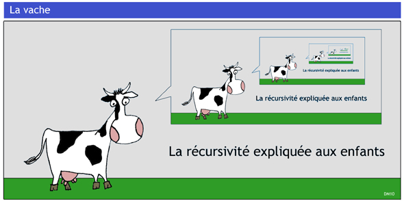

Récursivité#
Fonction récursive#
La récursivité est un phénomène qui se répète, qui s’applique à lui-même.
{kind=link}
Une fonction récursive est une fonction qui s’appelle elle-même. Bien évidemment, elle ne peut s’appeler elle-même indéfiniment ! Elle contient donc une condition d’arrêt.
Remarques
Une fonction récursive est appelée une première fois avec ses arguments. Cette fonction, en s’exécutant, va donc s’appeler elle-même avec d’autres arguments, qui va donc s’appeler elle-même encore une troisième fois avec d’autres arguments, et ainsi de suite …
Une condition d’arrêt sur la valeur des arguments est vérifiée à chaque appel. Lorsque la condition est vraie, les appels s’arrêtent. Une pile d’appels s’est consituée mettant en attente toutes les fonctions appelantes.
La pile des fonctions en attente reprend son éxécution jusqu’à l’appel initial qui renvoie le résultat attendu.
Exemple
Le jeu des tours de Hanoï a une solution récursive. Pour 4 disques:
on résout le problème avec 3 disques en les déplaçant du poteau de départ
Dau poteau intermédiaireI;le plus grand disque est libre; on le déplace sur le poteau d’arrivée
A;on résout le problème avec 3 disques en les déplaçant du poteau intermédiaire
Iau poteau d’arrivéeA.
{kind=link}
La résolution à 3 disques fait appel à la solution à 2 disques qui elle-même fait appel à la solution à 1 disque qui consiste à déplacer ce plus petit disque. Ce dernier appel constitue le cas de base.
def tour_hanoi(n,D,I,A):
if n > 0:
# on applelle la résolution pour n-1 disques
tour_hanoi(n-1,D,I,A)
# on déplace le disque libéré de D vers A
deplacer(D,A)
# on appelle la résolution des n-1 disques en I vers A
tour_hanoi(n-1,I,D,A)
Le code Python précédent peut être écrit autrement, avec une condition d’arrêt pour n=1 disque:
def tour_hanoi(n,D,I,A):
if n == 1:
# on déplace le disque de D vers A
deplacer(D,A)
else:
# on applelle la résolution pour n-1 disques
tour_hanoi(n-1,D,A,I)
# on déplace le disque libéré de D vers A
deplacer(D,A)
# on appelle la résolution des n-1 disques en I vers A
tour_hanoi(n-1,I,D,A)
Pile d’appels de la récursivité#
Une fonction récursive crée une pile d’appels et interrompt l’exécution du code à chaque appel. Lorsque le dernier appel renvoie une réponse, la pile d’appels se vide et le code reprend là où il s’est interrompu.
On peut visualiser ces appels récursifs en utilisant 2 modules : Python tutor et rcviz.